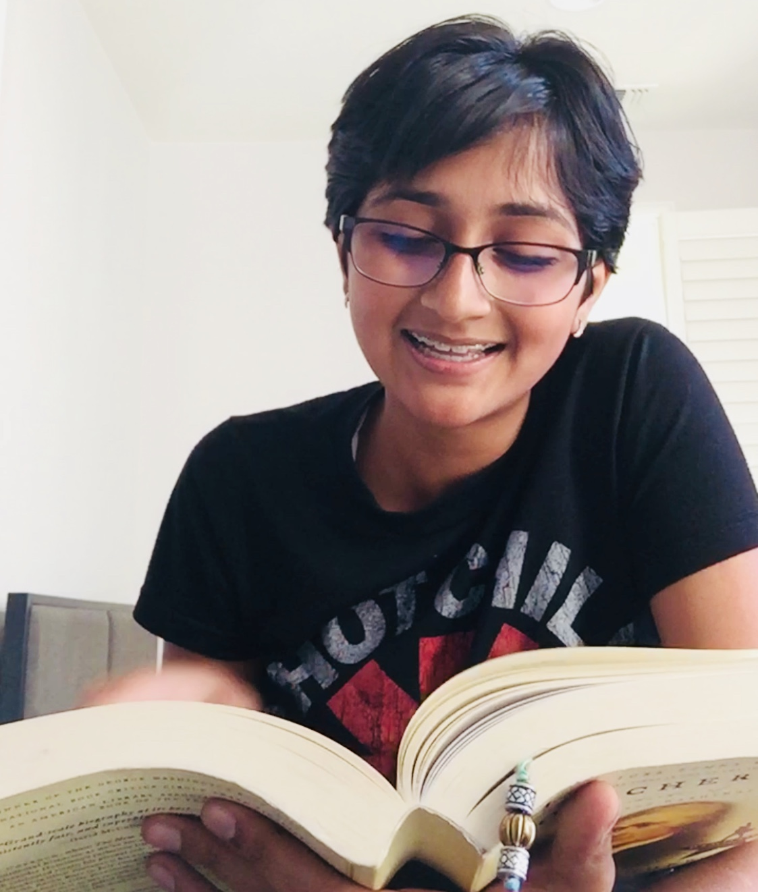

I'm a writer who enjoys learning things, talking to people, and chasing stories. I love words - I edit with a keen eye for grammar and shades of meaning, and I strive to put a unique flair into everything I write and do. I am a first-year student studying Cognitive Science and Comparative Literature.
Here is my LinkedIn page. -Digital Scholarship Editor @ Center for Digital Liberal Arts -Marketing Intern for African Library Project -Editor-in-Chief Eagle Era
Proficient in Spanish, Tamil, American Sign Language, English
Strong writing and editing skills